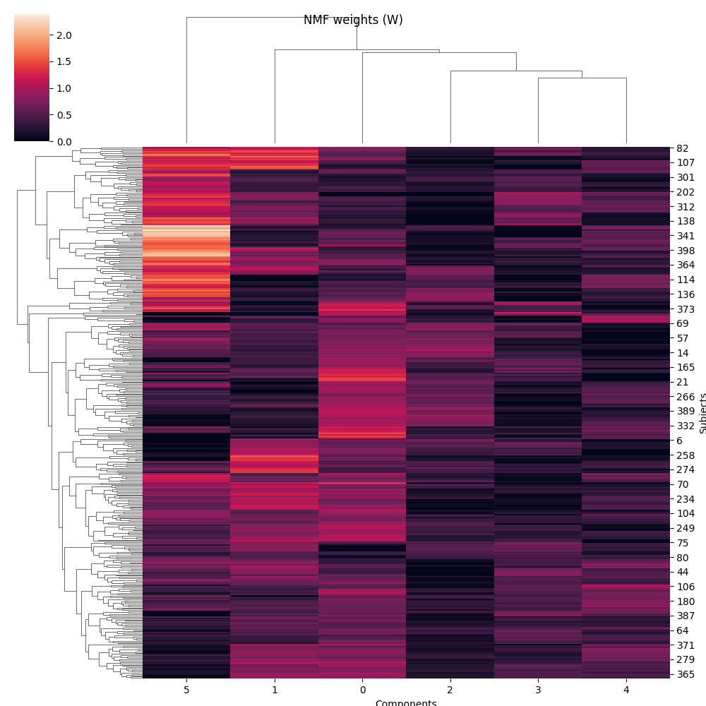
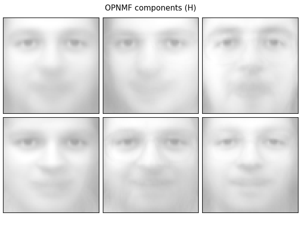
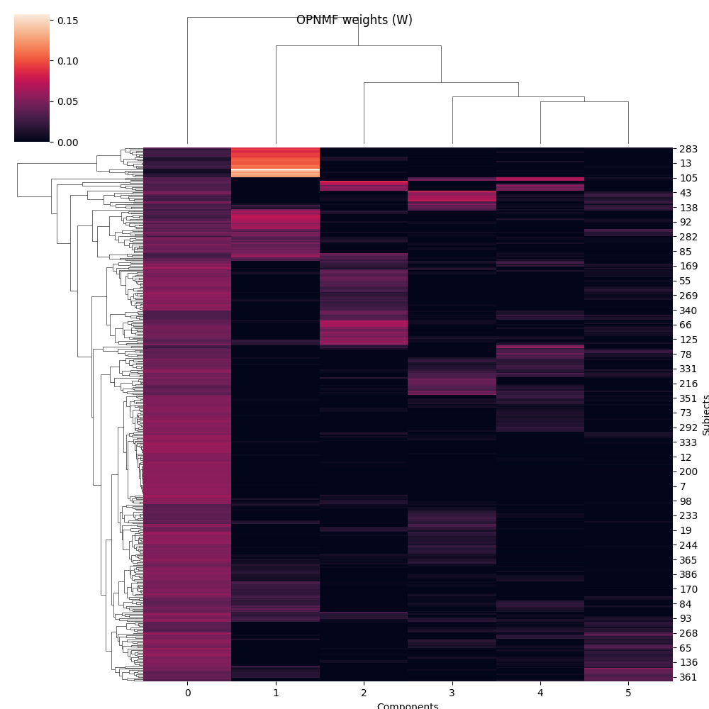
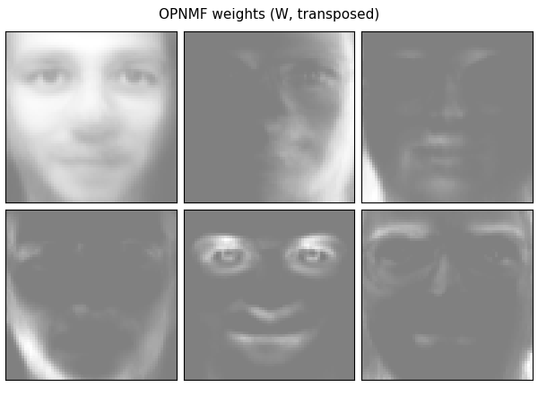
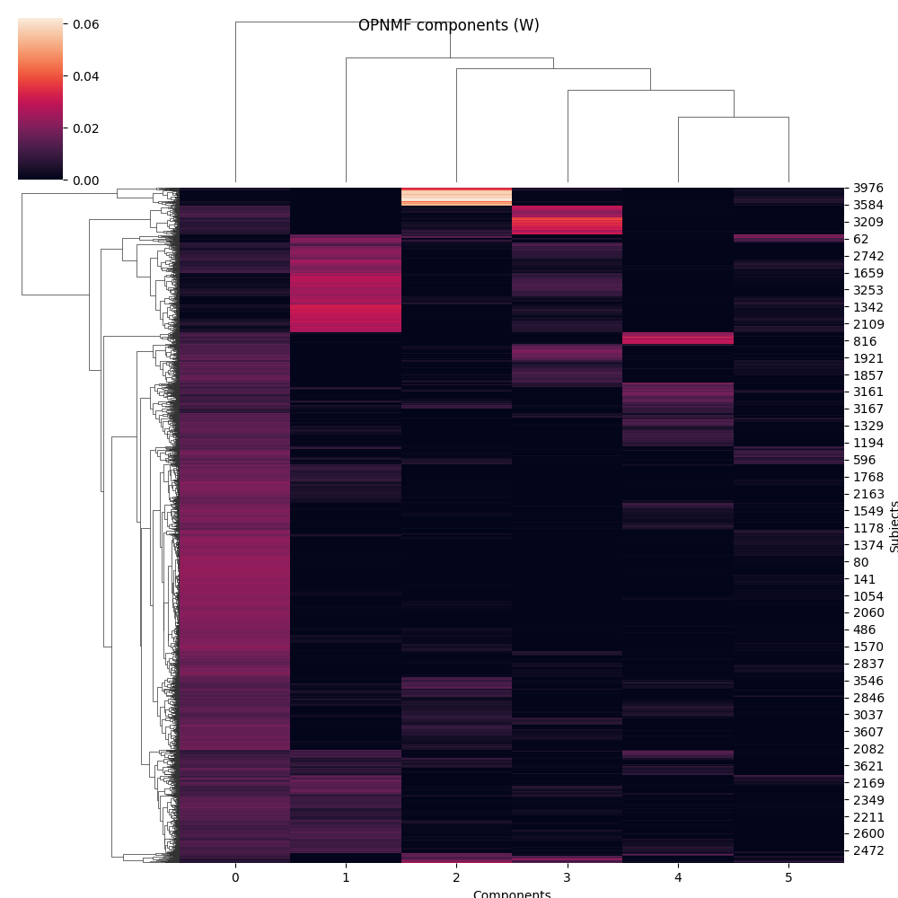
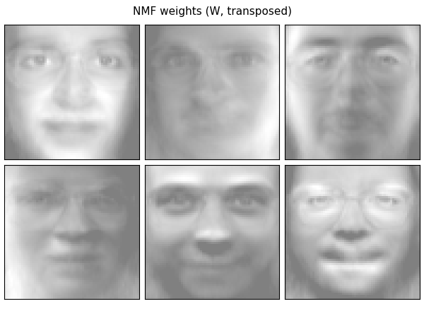
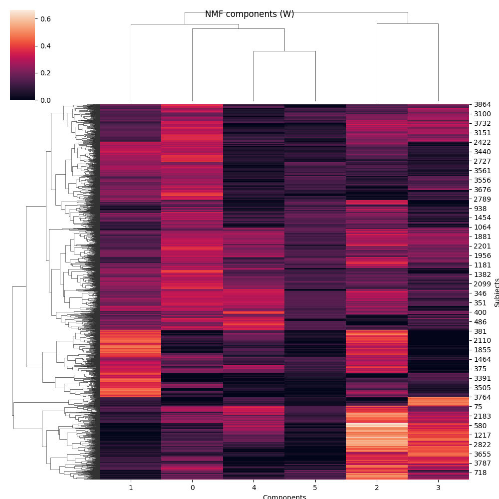

Note
Click here to download the full example code
Faces Decomposition
Implemented based on scikit-learn’s decomposition example.
Authors: Federico Raimondo, Vlad Niculae, Alexandre Gramfort
License: BSD 3 clause
from numpy.random import RandomState
import matplotlib.pyplot as plt
import seaborn as sns
from sklearn.datasets import fetch_olivetti_faces
from sklearn import decomposition
from opnmf import model, logging
Out:
/opt/hostedtoolcache/Python/3.8.12/x64/lib/python3.8/site-packages/seaborn/cm.py:1582: UserWarning: Trying to register the cmap 'rocket' which already exists.
mpl_cm.register_cmap(_name, _cmap)
/opt/hostedtoolcache/Python/3.8.12/x64/lib/python3.8/site-packages/seaborn/cm.py:1583: UserWarning: Trying to register the cmap 'rocket_r' which already exists.
mpl_cm.register_cmap(_name + "_r", _cmap_r)
/opt/hostedtoolcache/Python/3.8.12/x64/lib/python3.8/site-packages/seaborn/cm.py:1582: UserWarning: Trying to register the cmap 'mako' which already exists.
mpl_cm.register_cmap(_name, _cmap)
/opt/hostedtoolcache/Python/3.8.12/x64/lib/python3.8/site-packages/seaborn/cm.py:1583: UserWarning: Trying to register the cmap 'mako_r' which already exists.
mpl_cm.register_cmap(_name + "_r", _cmap_r)
/opt/hostedtoolcache/Python/3.8.12/x64/lib/python3.8/site-packages/seaborn/cm.py:1582: UserWarning: Trying to register the cmap 'icefire' which already exists.
mpl_cm.register_cmap(_name, _cmap)
/opt/hostedtoolcache/Python/3.8.12/x64/lib/python3.8/site-packages/seaborn/cm.py:1583: UserWarning: Trying to register the cmap 'icefire_r' which already exists.
mpl_cm.register_cmap(_name + "_r", _cmap_r)
/opt/hostedtoolcache/Python/3.8.12/x64/lib/python3.8/site-packages/seaborn/cm.py:1582: UserWarning: Trying to register the cmap 'vlag' which already exists.
mpl_cm.register_cmap(_name, _cmap)
/opt/hostedtoolcache/Python/3.8.12/x64/lib/python3.8/site-packages/seaborn/cm.py:1583: UserWarning: Trying to register the cmap 'vlag_r' which already exists.
mpl_cm.register_cmap(_name + "_r", _cmap_r)
/opt/hostedtoolcache/Python/3.8.12/x64/lib/python3.8/site-packages/seaborn/cm.py:1582: UserWarning: Trying to register the cmap 'flare' which already exists.
mpl_cm.register_cmap(_name, _cmap)
/opt/hostedtoolcache/Python/3.8.12/x64/lib/python3.8/site-packages/seaborn/cm.py:1583: UserWarning: Trying to register the cmap 'flare_r' which already exists.
mpl_cm.register_cmap(_name + "_r", _cmap_r)
/opt/hostedtoolcache/Python/3.8.12/x64/lib/python3.8/site-packages/seaborn/cm.py:1582: UserWarning: Trying to register the cmap 'crest' which already exists.
mpl_cm.register_cmap(_name, _cmap)
/opt/hostedtoolcache/Python/3.8.12/x64/lib/python3.8/site-packages/seaborn/cm.py:1583: UserWarning: Trying to register the cmap 'crest_r' which already exists.
mpl_cm.register_cmap(_name + "_r", _cmap_r)
set up logging
logging.configure_logging(level='INFO')
Out:
2021-11-09 12:44:35,733 - opnmf - INFO - ===== Lib Versions =====
2021-11-09 12:44:35,733 - opnmf - INFO - numpy: 1.19.5
2021-11-09 12:44:35,733 - opnmf - INFO - scipy: 1.7.2
2021-11-09 12:44:35,733 - opnmf - INFO - sklearn: 0.24.2
2021-11-09 12:44:35,733 - opnmf - INFO - opnmf: 0.0.3.dev1+g88d7273.d20211109
2021-11-09 12:44:35,733 - opnmf - INFO - ========================
We will plot 6 faces and factorize to 6 components
n_row, n_col = 2, 3
n_components = n_row * n_col
image_shape = (64, 64)
rng = RandomState(0)
Load faces data
faces, _ = fetch_olivetti_faces(return_X_y=True, shuffle=True,
random_state=rng)
n_samples, n_features = faces.shape
print("Dataset consists of %d faces" % n_samples)
Out:
downloading Olivetti faces from https://ndownloader.figshare.com/files/5976027 to /home/runner/scikit_learn_data
Dataset consists of 400 faces
Defile plotting function
def plot_gallery(title, images, n_col=n_col, n_row=n_row, cmap=plt.cm.gray):
plt.figure(figsize=(2. * n_col, 2.26 * n_row))
plt.suptitle(title, size=11)
for i, comp in enumerate(images):
plt.subplot(n_row, n_col, i + 1)
vmax = max(comp.max(), -comp.min())
plt.imshow(comp.reshape(image_shape), cmap=cmap,
interpolation='nearest',
vmin=-vmax, vmax=vmax)
plt.xticks(())
plt.yticks(())
plt.subplots_adjust(0.01, 0.05, 0.99, 0.93, 0.04, 0.)
Let’s see how the first 6 faces look (centered around the mean) global centering
faces_centered = faces - faces.mean(axis=0)
# local centering
faces_centered -= faces_centered.mean(axis=1).reshape(n_samples, -1)
plot_gallery("First centered Olivetti faces", faces_centered[:n_components])

Lets set some parameters
NMF and OPNMF are both bi-factor factorization. The shared idea is that given a non-negative input matrix \(X \in \mathbb{R}^{m \times n}\), one tries to find two non-negative matrix \(W \in \mathbb{R}^{m \times r}\) and \(H \in \mathbb{R}^{r \times m}\) such that:
In scikit-learn’s terminology, fit_transform will return \(W\) while
\(H\) will be stored as the components_ attribute of the estimator.
estimator = decomposition.NMF(
n_components=n_components, init=init, tol=tolerance)
W = estimator.fit_transform(faces)
H = estimator.components_
print(W.shape)
print(H.shape)
Out:
/opt/hostedtoolcache/Python/3.8.12/x64/lib/python3.8/site-packages/sklearn/decomposition/_nmf.py:1090: ConvergenceWarning: Maximum number of iterations 200 reached. Increase it to improve convergence.
warnings.warn("Maximum number of iterations %d reached. Increase it to"
(400, 6)
(6, 4096)
Now H (the components) is a 6 by 4096 matrix (n_components x pixels) and W (the weights) is a 400 by 6 matrix (n_samples x n_components) We can actually plot the components as images and the weights as a cluster map.
plot_gallery('NMF components (H)', H[:n_components])
g = sns.clustermap(W)
g.fig.suptitle('NMF weights (W)')
g.ax_heatmap.set_xlabel('Components')
g.ax_heatmap.set_ylabel('Subjects')

- 
Out:
Text(990.5555555555553, 0.5, 'Subjects')
Contrary to NMF, Projected Non-Negative Matrix Factorization (PNF), is defined such that:
where \(P = WW^{T}\).
This expands to:
In consecuence \(H=W^{T}X\)
The Orthonormal Projected Non-Negative Matrix Factorization (OPNMF), adds another constraint to \(W\): orthonormality.
Let’s do the same figures as with NMF
estimator = model.OPNMF(n_components=n_components, init=init, tol=tolerance)
W = estimator.fit_transform(faces)
H = estimator.components_
plot_gallery('OPNMF components (H)', H[:n_components])
g = sns.clustermap(W)
g.fig.suptitle('OPNMF weights (W)')
g.ax_heatmap.set_xlabel('Components')
g.ax_heatmap.set_ylabel('Subjects')
- 
- 
Out:
2021-11-09 12:44:39,223 - opnmf - INFO - Initializing using nndsvd
2021-11-09 12:44:39,301 - opnmf - INFO - iter=0 diff=0.9636635184288025, obj=155.62796020507812
2021-11-09 12:44:39,363 - opnmf - INFO - Converged in 80 iterations
Text(990.5555555555555, 0.5, 'Subjects')
From these plots, we can see that OPNMF seems to do some sort of clustering over the first dimension of X. As the orthonormality constraint forces every subject to have a positive weight with at most one component, it defines components in a way that each subject matches only one.
Interestingly, we can use this methodology to do so on the other dimension (pixels in the image)
estimator = model.OPNMF(n_components=n_components, init=init, tol=tolerance)
W = estimator.fit_transform(faces.T) # Transpose the faces
H = estimator.components_
print(W.shape)
print(H.shape)
Out:
2021-11-09 12:44:40,246 - opnmf - INFO - Initializing using nndsvd
2021-11-09 12:44:40,559 - opnmf - INFO - iter=0 diff=0.9637102484703064, obj=155.66993713378906
2021-11-09 12:44:43,915 - opnmf - INFO - iter=100 diff=0.005347760859876871, obj=146.4691162109375
2021-11-09 12:44:44,375 - opnmf - INFO - Converged in 114 iterations
(4096, 6)
(6, 400)
In this case, H (the components) is a 6 by 400 matrix (n_components x n_samples) and W (the weights) is a 4096 by 6 matrix (pixels x n_components). So now we can plot W as images and H as a cluster map.
plot_gallery('OPNMF weights (W, transposed)', W[:, :n_components].T)
g = sns.clustermap(W)
g.fig.suptitle('OPNMF components (W)')
g.ax_heatmap.set_xlabel('Components')
g.ax_heatmap.set_ylabel('Subjects')
- 
- 
Out:
/opt/hostedtoolcache/Python/3.8.12/x64/lib/python3.8/site-packages/seaborn/matrix.py:654: UserWarning: Clustering large matrix with scipy. Installing `fastcluster` may give better performance.
warnings.warn(msg)
Text(990.5555555555555, 0.5, 'Subjects')
We can also do the same with NMF, but there will be no effect. Assuming \(X^T=\tilde{X}\) and the following NMF:
Then the solution \(X \approx WH\) can be also used:
which expands to:
So from the first formula: \(\tilde{W}=H^T\) and \(\tilde{H}=W^T\)
estimator = decomposition.NMF(
n_components=n_components, init=init, tol=tolerance)
W = estimator.fit_transform(faces.T) # Transpose the faces
H = estimator.components_
plot_gallery('NMF weights (W, transposed)', W[:, :n_components].T)
g = sns.clustermap(W)
g.fig.suptitle('NMF components (W)')
g.ax_heatmap.set_xlabel('Components')
g.ax_heatmap.set_ylabel('Subjects')
- 
- 
Out:
/opt/hostedtoolcache/Python/3.8.12/x64/lib/python3.8/site-packages/sklearn/decomposition/_nmf.py:1090: ConvergenceWarning: Maximum number of iterations 200 reached. Increase it to improve convergence.
warnings.warn("Maximum number of iterations %d reached. Increase it to"
/opt/hostedtoolcache/Python/3.8.12/x64/lib/python3.8/site-packages/seaborn/matrix.py:654: UserWarning: Clustering large matrix with scipy. Installing `fastcluster` may give better performance.
warnings.warn(msg)
Text(990.5555555555555, 0.5, 'Subjects')
If you want to follow the original explanaition with much more math, see:
Z. Yang and E. Oja, “Linear and Nonlinear Projective Nonnegative Matrix Factorization,” in IEEE Transactions on Neural Networks, vol. 21, no. 5, pp. 734-749, May 2010, doi: 10.1109/TNN.2010.2041361.
plt.show()
Total running time of the script: ( 0 minutes 12.181 seconds)